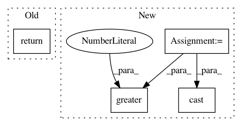

515b80c9737f5e522d357c6d8d030d73327dd439,tensorflow_ranking/python/metrics_impl.py,,_per_example_weights_to_per_list_weights,#Any#Any#,35
Before Change
per_list_weights = tf.compat.v1.math.divide_no_nan(
tf.reduce_sum(input_tensor=weights * relevance, axis=1, keepdims=True),
tf.reduce_sum(input_tensor=relevance, axis=1, keepdims=True))
return per_list_weights
def _discounted_cumulative_gain(labels,
weights=None,
After Change
Returns:
The per list `Tensor` of shape [batch_size, 1]
per_list_relevance = tf.reduce_sum(
input_tensor=relevance, axis=1, keepdims=True)
nonzero_relevance = tf.cast(tf.greater(per_list_relevance, 0.0), tf.float32)
nonzero_relevance_count = tf.reduce_sum(
input_tensor=nonzero_relevance, axis=0, keepdims=True)
per_list_weights = tf.compat.v1.math.divide_no_nan(
tf.reduce_sum(input_tensor=weights * relevance, axis=1, keepdims=True),
per_list_relevance)
sum_weights = tf.reduce_sum(
input_tensor=per_list_weights, axis=0, keepdims=True)
avg_weight = tf.compat.v1.math.divide_no_nan(sum_weights,
nonzero_relevance_count)
return tf.compat.v1.where(
tf.greater(per_list_relevance, 0.0), per_list_weights,
tf.ones_like(per_list_weights) * avg_weight)
In pattern: SUPERPATTERN
Frequency: 3
Non-data size: 4
Instances
Project Name: tensorflow/ranking
Commit Name: 515b80c9737f5e522d357c6d8d030d73327dd439
Time: 2020-01-13
Author: xuanhui@google.com
File Name: tensorflow_ranking/python/metrics_impl.py
Class Name:
Method Name: _per_example_weights_to_per_list_weights
Project Name: NeuromorphicProcessorProject/snn_toolbox
Commit Name: 71d61f102189f8b7337567ca34ad590f2ddf4808
Time: 2018-02-27
Author: bodo.rueckauer@gmail.com
File Name: snntoolbox/simulation/backends/inisim/ttfs_dyn_thresh.py
Class Name: SpikeMaxPooling2D
Method Name: call
Project Name: NeuromorphicProcessorProject/snn_toolbox
Commit Name: 71d61f102189f8b7337567ca34ad590f2ddf4808
Time: 2018-02-27
Author: bodo.rueckauer@gmail.com
File Name: snntoolbox/simulation/backends/inisim/ttfs.py
Class Name: SpikeMaxPooling2D
Method Name: call